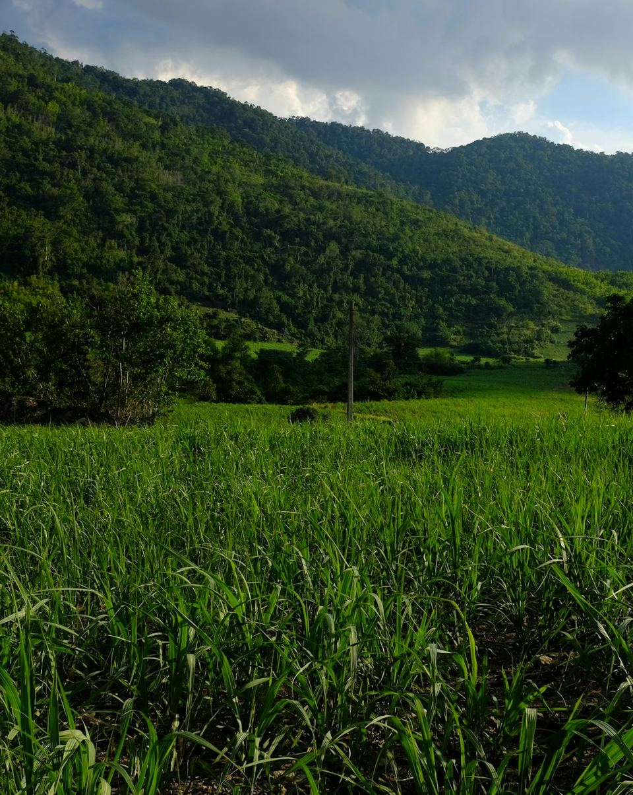
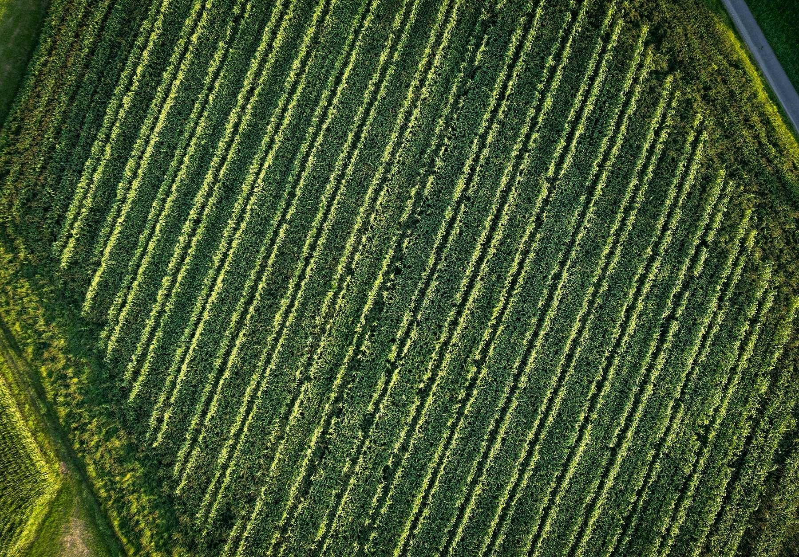
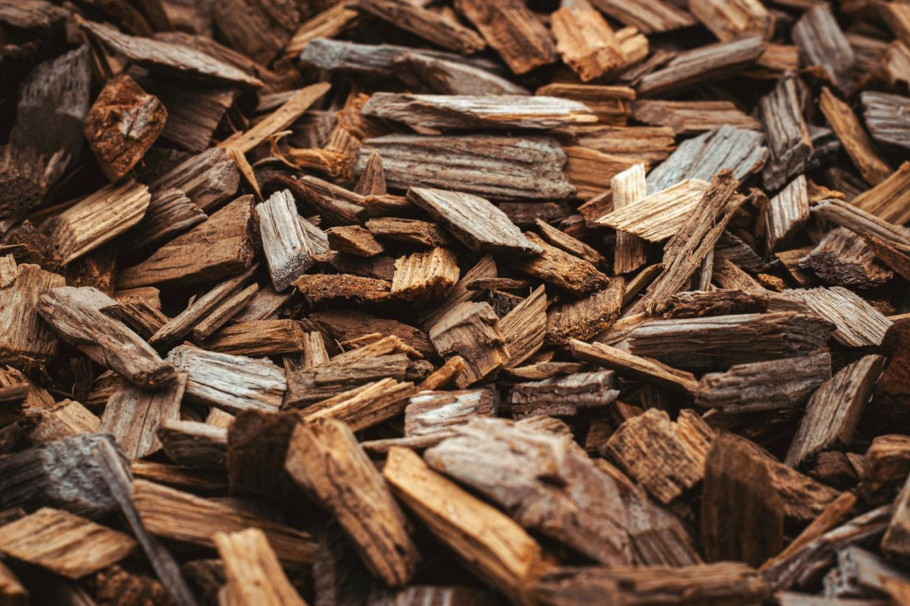
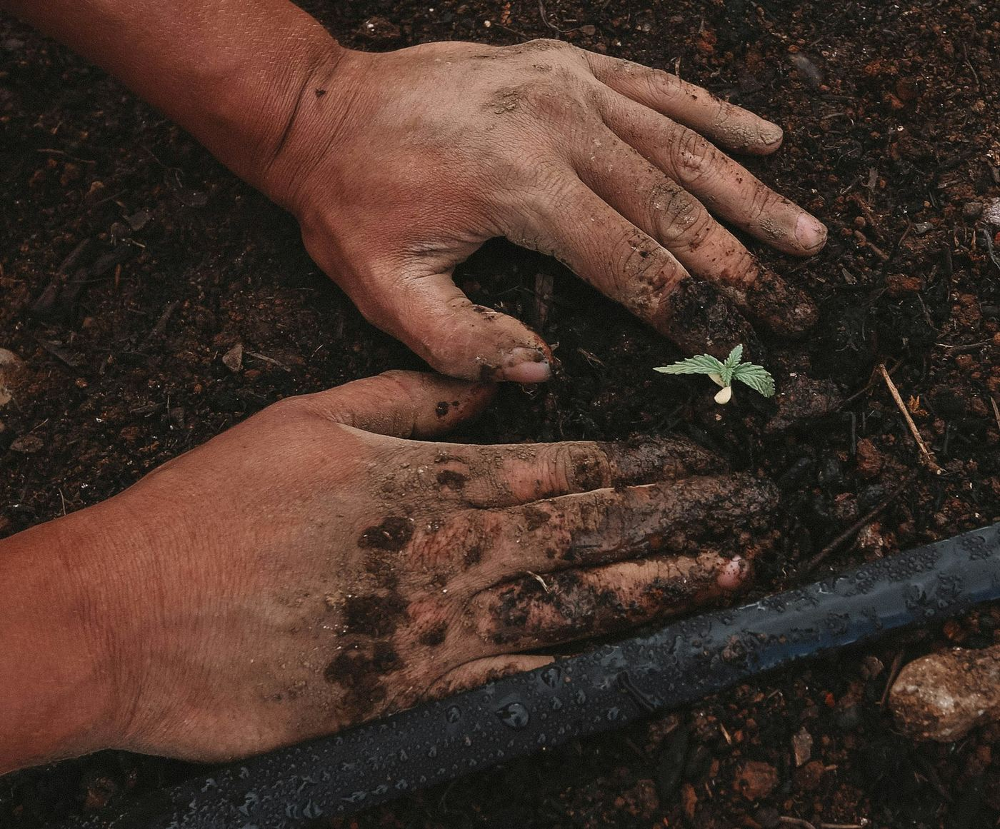
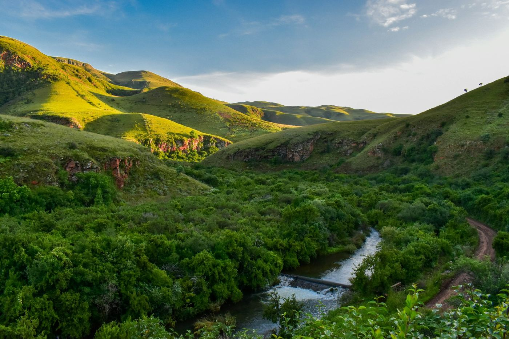

Genetics
The Mackay variety of Bana grass. We hold the cutting supply for every project that grows the crop, and steward cultivation standards through the licence.
Integrated biomass value chain
We build on the Mackay variety of Bana grass, a high‑yield sterile hybrid, and develop the projects that turn it into commercial product. That covers everything from the cutting in the ground to the offtake agreement that takes it to market.

01 The context
Enormous capital has gone into biomass plants, digesters, co‑firing retrofits, biochar and biofuels. The supply side has not kept pace. Projects stall at financial close. The technology works and the capital is there, but long‑term, price‑stable, bankable feedstock cannot be secured.
Farmland is optimised for food and annual cash crops. Industry needs predictable volumes, multi‑year certainty and uniform quality. The two systems grew up separately, and now they are colliding.
This is a market‑readiness moment, not a science breakthrough. MGEG sits at the intersection.
02 Our approach
Every project is reverse‑engineered from a secured offtake. We work backwards from the buyer to the land, rather than planting first and hoping for buyers. The chain is designed to close before it starts.
A buyer’s product specification: moisture, calorific value, ash, particle size, cadence.
The specification sets the processing configuration.
The configuration sets how much feedstock is needed.
Volume sets the planted area, sized on measured local yield.
Only then do cuttings go into the ground.
03 The crop
A sterile hybrid in the Pennisetum family, selected for yield, resilience and the breadth of end products it supports. It produces no viable seed, so it spreads only through stem cuttings. Whoever controls the cutting supply controls deployment. That protection is biological, not just legal.
The variety has been cultivated commercially in the Philippines and across parts of Asia. MGEG is now establishing it in Southern Africa. Genetic‑development and tissue‑culture work is underway with university and biotechnology partners, including the University of Mpumalanga.
Planned on a conservative figure, then validated site by site through our own nursery.
A long productive life from a single planting, with no annual replanting.
Strong resilience to drought, heat and storms.
Harvest age tunes the biomass to the end product it is destined for.
04 The value chain
Each pillar is a capability in its own right. Together they take a cutting to a contracted end product.
The Mackay variety of Bana grass. We hold the cutting supply for every project that grows the crop, and steward cultivation standards through the licence.
Growing it at industrial scale. Land assessment, clearances, nursery establishment, planting, crop management and harvest, backed by block‑level digital monitoring.
Converting biomass to the buyer’s specification through a vetted network of EPC and technology partners across Asia, Southern Africa and Europe.
The trigger and the revenue. MGEG secures the long‑term offtake and contracts growers to supply it. No offtake, no project.
Sustainable Farming and Trade Framework runs across all four pillars

A viable, sustainable and valuable commodity.
06 End products
The same crop serves a broad ladder of products. We enter with the simplest one, coal replacement, because it is fastest to stand up and it establishes the farm. As demand grows, the same biomass climbs the ladder.

Chipped and dried, for co‑firing and coal or bagasse substitution in cement, sugar, paper and power.
White pellets, briquettes and torrefied “green coal” for export demand into Europe and East Asia.
From soil amendment to activated carbon, plus higher‑margin cooking charcoal.
Industrial heat and decentralised power for off‑grid and island markets, with digestate fertiliser.
High‑protein animal feed and emerging bio‑based materials.
Sustainable aviation fuel through downstream conversion. The long‑horizon, highest‑value destination.
07 Working with MGEG
We don’t ask anyone to commit hundreds of hectares on day one. We establish a small nursery on your land, prove the yield in your location, and grow from there.

Clean Mackay Bana grass planting material to establish your nursery.
A productised establishment package: scouting, planting, and a written farmer manual.
Measured yield on your own land, so project sizing rests on local data.
Outgrow the nursery into licensed hectares, contracted against an offtake.
MGEG develops across all four pillars, typically through a project vehicle.
For partners with land, technology and offtake. License the crop and take cutting supply.
The crop plus the full agronomic package, for partners who already hold technology and offtake.
For growers who need processing configured through our vetted partner network.
We farm two ways. Established farming partners with commercial growers diversifying against a contracted offtake. Development farming builds operations with rural and community landholders. The same standards govern both.
08 Carbon
We price no carbon into any agreement today. No‑till practice and a perennial crop leave growers well placed for soil‑carbon credits, and those credits are theirs. Through the framework, MGEG collects the data and enrols farmers into a recognised programme. Our carbon partner is AgriCarbon, part of Anthesis, which runs South Africa’s first agricultural carbon programme issuing under Verra VM0042.
09 Why MGEG
10 Where we work

Near‑term proof
Nursery pilots across the Lowveld, KwaZulu‑Natal and the Eastern and Northern Cape, feeding coal‑substitution offtake in cement, sugar and industrial heat.
Longest cultivation history
Government and provincial engagement, with cement and coal‑replacement offtake demand.
In development
Biomass feedstock supply to a major independent power producer.
Second wave
Mozambique, Namibia, Zambia and beyond, where off‑grid deficits meet coal‑heavy industry.
A market, not a production base
High‑value offtake for densified biomass, premium silage and high‑integrity carbon.
11 Leadership
Co‑founder & Group CEO
Three decades across biomass, waste‑to‑energy, solar PV and battery storage. He pioneered biomass co‑firing retrofits in coal‑fired power stations and has deployed over 160 MW of solar PV and BESS across Southern Africa.
Director, Strategy & Commercial Development
An entrepreneur and strategist who co‑founded ventures across health, consumer products and infrastructure. He leads commercial structuring, market integration and global partnerships.
Director, Global Agricultural Development & Agronomy
More than ten years in agribusiness across Southern Africa and Canada, and a qualified crop advisor. He leads agronomic strategy and governance across all hub countries.
Chief Financial Officer & Investor Relations
More than twenty years of senior financial leadership. He founded AgriDynamix, a farm‑management, carbon MRV and financial‑governance platform built for Bana grass projects.
Director, Sustainability & Governance Frameworks
An advocate of the High Court of South Africa who authored the country’s first traceable grass‑fed meat protocol. She leads the Sustainable Farming and Trade Framework.
Commercial & Business Development
More than forty years in commercial leadership, including as an Executive Director on the board of Vodacom South Africa. He strengthens the Market and Offtake pillar.
Sales Manager, Asia
A business leader and climate‑action advocate active in the Philippine Chambers of Commerce and Industry, and formerly Director of Sales at Century Properties Group.
The crop performs. The agronomy is documented. The technology partners are vetted. The offtake demand is real.
For offtake, land, partnership or investment enquiries.
info@example.com